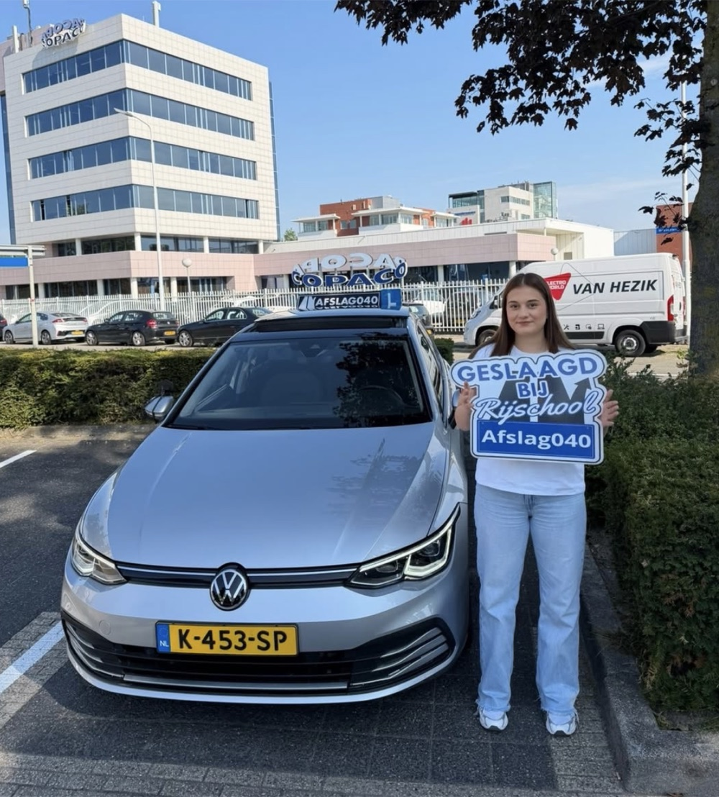
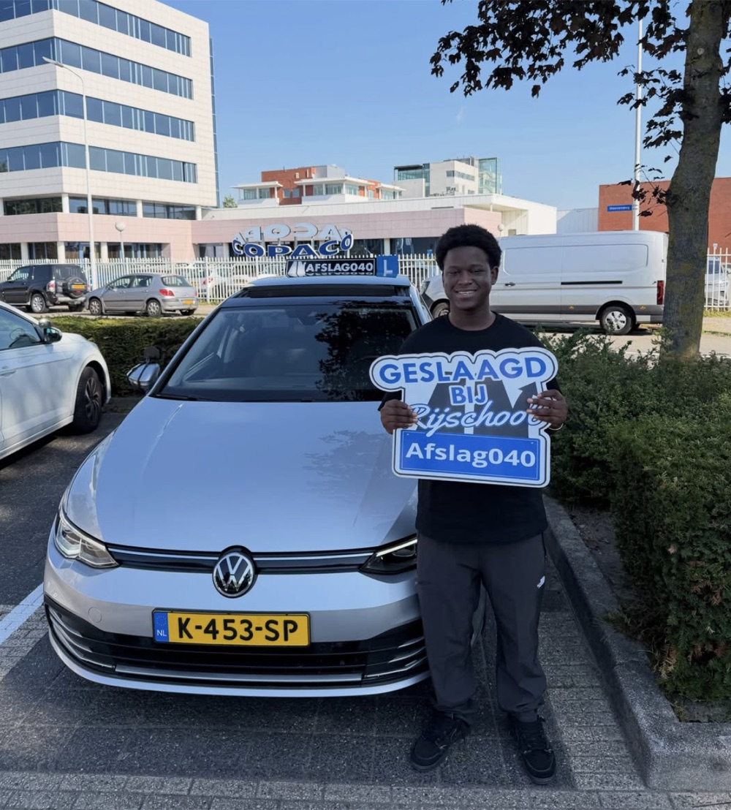
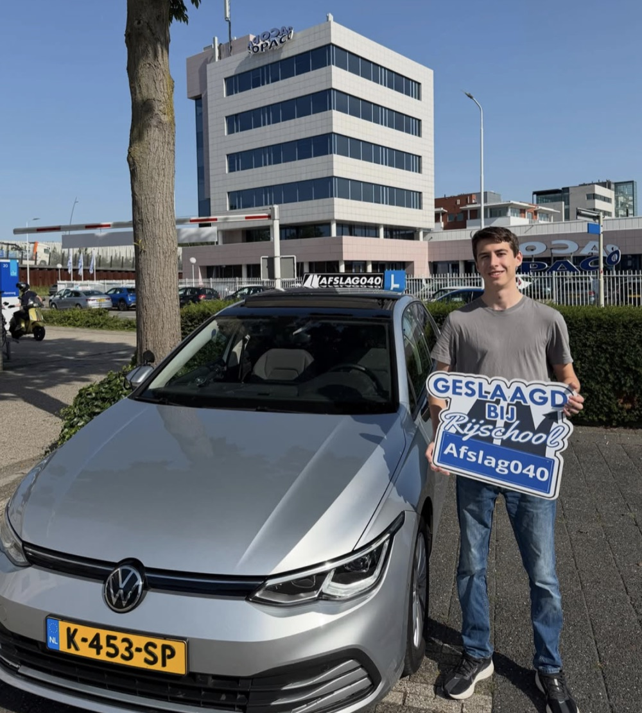
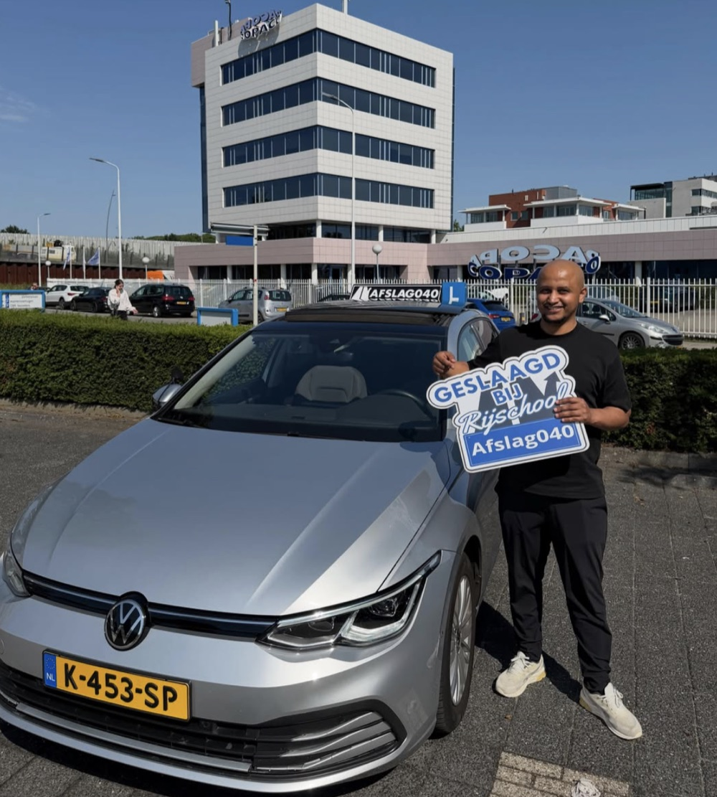
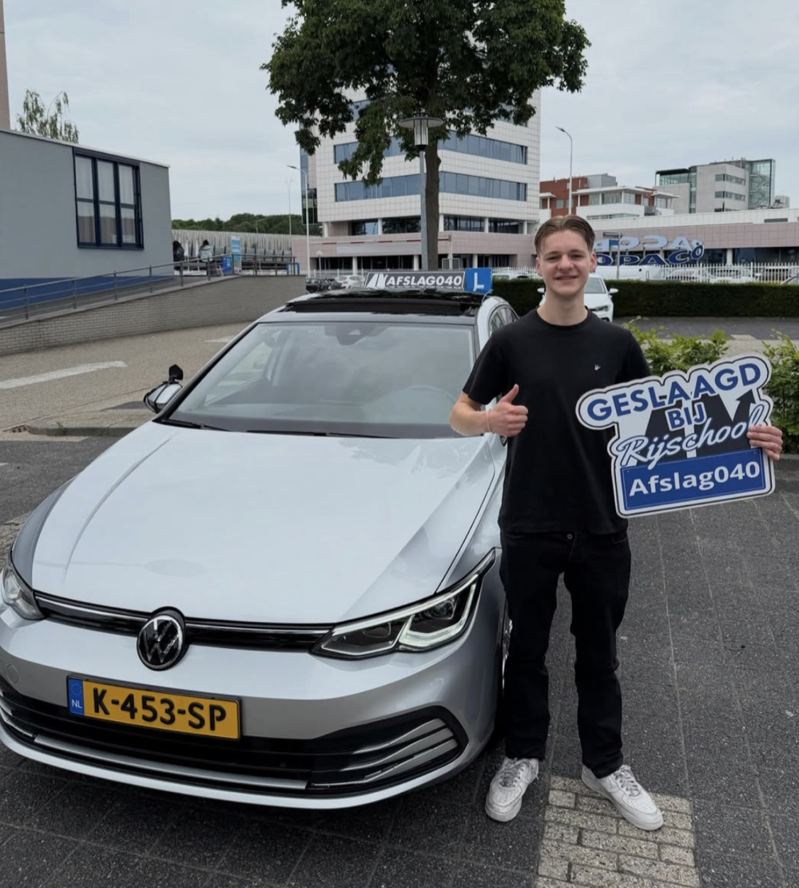
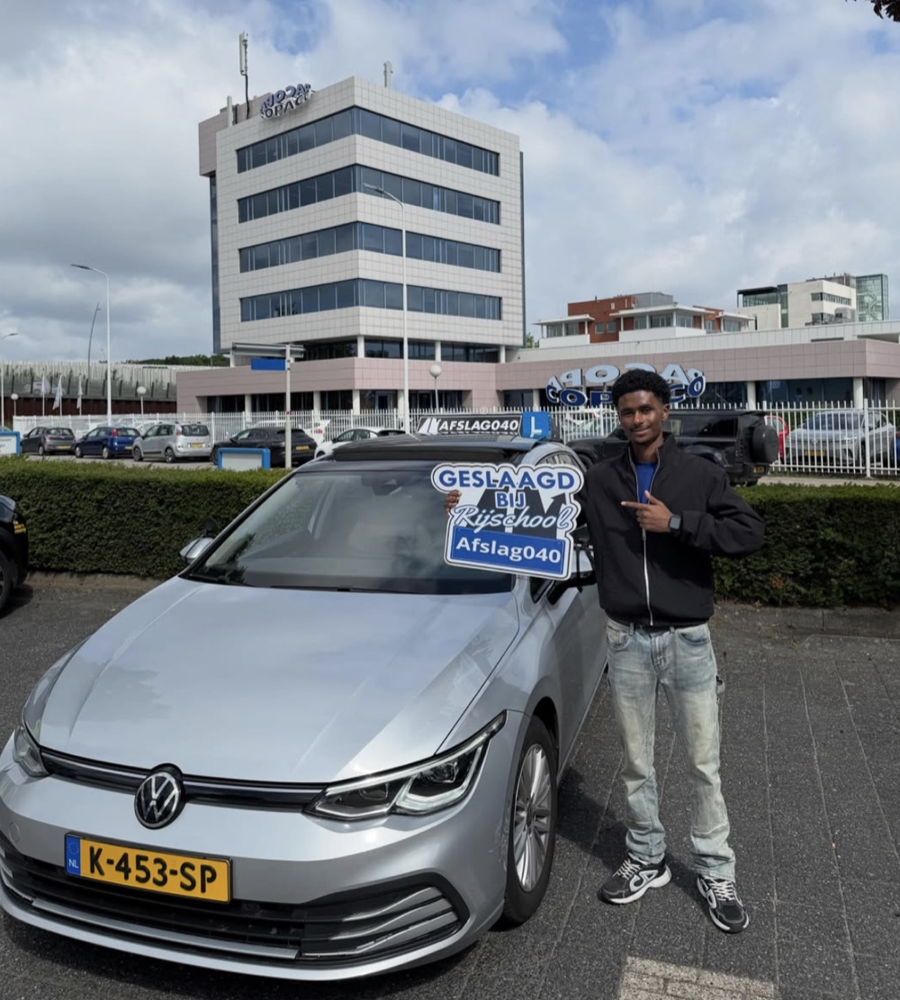
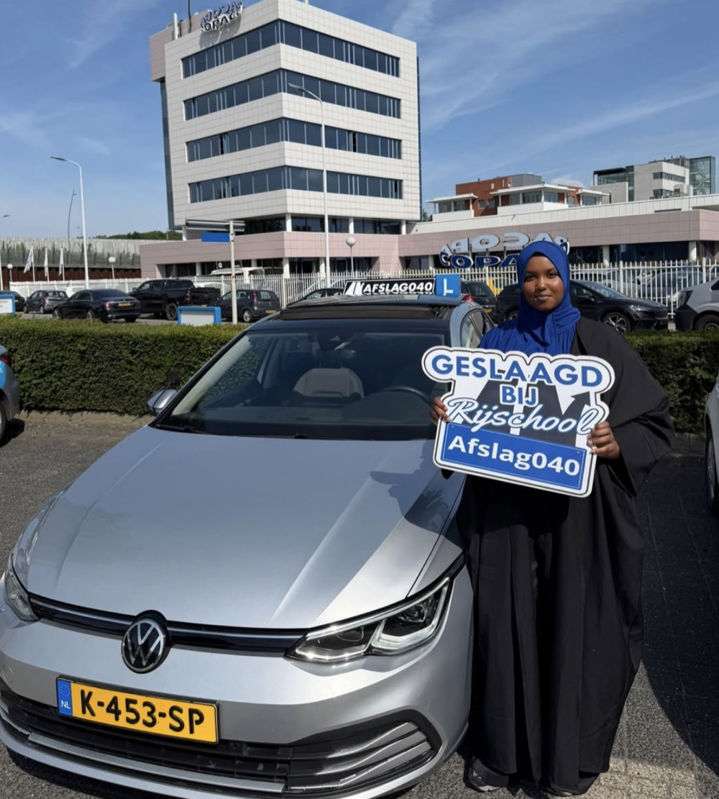
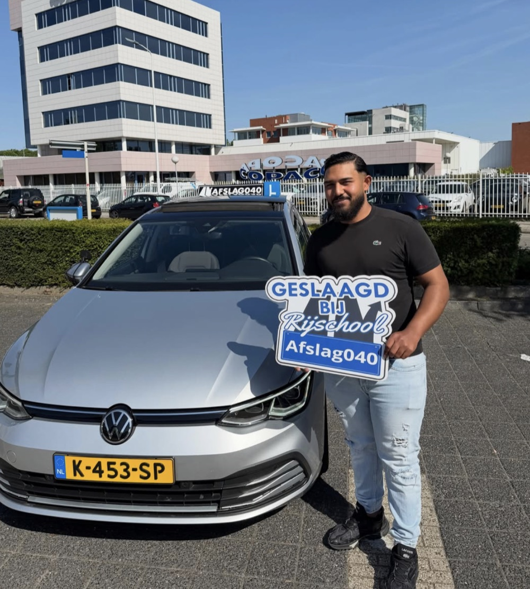
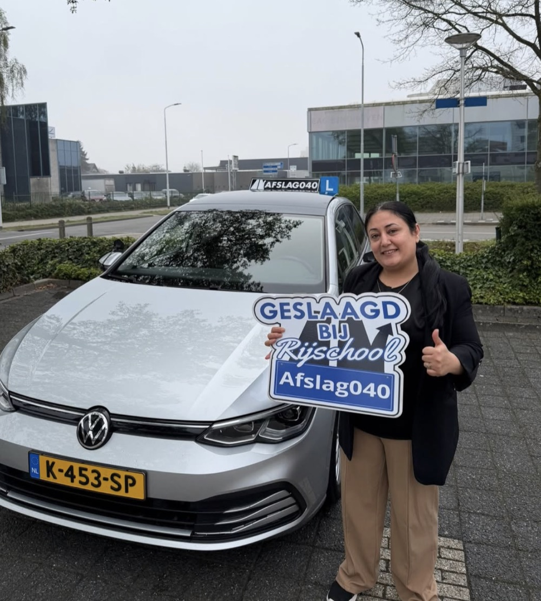
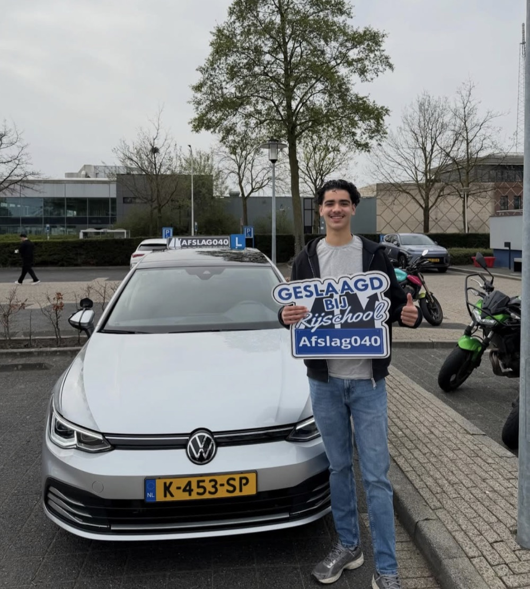

Top rijschool om je rijbewijs te halen! Ik was jarenlang bezig bij een andere rijschool, maar helaas lukte het daar niet. Toen ben ik overgestapt naar deze super fijne rijschool. Dankzij rijschool Afslag040 en instructeur Mucahit heb ik vandaag mijn rijbewijs gehaald. Hij heeft mij alles goed geleerd en zorgt voor een fijne sfeer tijdens de lessen. Zeker een aanrader!
Bestemming bereikt
De geslaagden-muur
Het blauwe GESLAAGD-bord, de zilvergrijze Golf en een grijns van oor tot oor. Zo ziet het einde van de route eruit bij Afslag 040.
0★
gemiddelde score op Google
0
Google-reviews
1 op 4
reviews komt van een overstapper














Het overstap-verhaal
Eerst ergens anders vastgelopen? Je bent niet de enige.
Lees de reviews hieronder en je ziet steeds hetzelfde patroon: jaren lessen bij een andere rijschool, geen resultaat, overstap naar Afslag 040 en dan ineens wél slagen. Vaak in één keer. Niet omdat hier een wonder gebeurt, maar omdat er eerst goed wordt gekeken wat jij nodig hebt.
Alle reviews
36 verhalen, woord voor woord van Google
Vandaag in één keer geslaagd! Een hele aardige rijinstructeur die iedereen op een persoonlijke en makkelijk aanspreekbare manier behandelt. Hierdoor voelde ik mij comfortabel tijdens de lessen en kon ik met vertrouwen mijn rijbewijs halen. Zeker een aanrader!
Beste rijschool van Eindhoven en omgeving! Binnen 2 maanden mijn rijbewijs gehaald. De instructeurs zijn fijn, denken goed mee en zorgen voor een veilig gevoel met duidelijke uitleg.
Super tevreden over Rijschool Afslag040! Dankzij de goede begeleiding, duidelijke uitleg en fijne lessen heb ik mijn rijexamen gehaald. De instructeur is geduldig, professioneel en motiverend. Echt een aanrader voor iedereen die zijn rijbewijs wil halen!
Mijn broertje is vandaag in één keer geslaagd bij Rijschool Afslag040. Hij heeft super begeleiding gehad en alles werd goed doorgelopen. Dankzij de goede lessen heeft hij binnen een paar maanden zijn rijbewijs gehaald.
Super fijne rijlessen gehad! De instructeur gaf duidelijke uitleg en stelde mij echt op mijn gemak. Er werd goed gekeken naar mijn eigen tempo, waardoor ik met vertrouwen kon leren rijden. Dankzij de goede begeleiding ben ik geslaagd. Zeker een aanrader!
Beste rijschool ooit! Ik zat eerst bij een andere rijschool, maar na mijn overstap naar Rijschool Afslag040 merkte ik direct het verschil. Dankzij de goede uitleg, het geduld en de persoonlijke begeleiding heb ik mijn rijbewijs kunnen halen. Een echte aanrader!
Deze rijschool is zeker een aanrader! Ik heb een fijne en leerzame ervaring gehad. Alles wordt rustig en duidelijk uitgelegd. Wanneer iets niet meteen duidelijk is, wordt er echt de tijd genomen om het opnieuw uit te leggen totdat je het begrijpt.
Beste rijschool in Eindhoven. Er wordt goed en duidelijk lesgegeven met veel aandacht voor de leerling. Je tijd wordt niet verspild en je krijgt kwalitatieve lessen. Na verschillende proeflessen bij andere rijscholen gedaan te hebben, was Afslag040 duidelijk de beste keuze. Dankzij de begeleiding ben ik in één keer geslaagd.
Ik ben overgestapt van een andere rijschool en ben goed geholpen door Afslag040. Er werd veel tijd en energie in mij gestoken. Vandaag ben ik in één keer geslaagd!
Geslaagd bij Afslag040! Fijne lessen gehad waarbij alles duidelijk werd uitgelegd. De sfeer was ontspannen, waardoor ik zonder stress goed heb leren rijden. Zeker een aanrader!
Goede rijschool. Ik heb meerdere rijinstructeurs gehad bij andere rijscholen, maar Afslag040 was duidelijk de beste keuze in Eindhoven. Zeker een aanrader!
Nadat ik ben gewisseld van rijschool ben ik in één keer geslaagd bij Rijschool Afslag040. Mucahit legt alles duidelijk uit en zorgt ervoor dat je goed voorbereid bent op het examen. Super fijne lessen en zeker een aanrader!
Vandaag in één keer geslaagd bij Rijschool Afslag040. Echt een top instructeur, altijd gezellig tijdens de lessen en een geweldige begeleiding. Zeker een aanrader!
Na een lange weg vol uitdagingen ben ik vandaag eindelijk geslaagd! Dankzij de geweldige begeleiding van Rijschool Afslag040 heb ik dit kunnen bereiken. Ik ben goed geholpen en nooit in de steek gelaten. Ontzettend bedankt voor alles!
Ik ben overgestapt van een andere rijschool naar Rijschool Afslag040 en dit was een topkeuze. Ik ben erg goed geholpen tijdens mijn rijlessen. Mijn instructeur legde alles duidelijk uit en behandelde mij professioneel. Een echte aanrader voor iedereen die snel en goed zijn rijbewijs wil halen!
Echt een fijne rijschool. Dankzij de rijlessen op maat ben ik in één keer geslaagd. Zeker een aanrader!
Ik ben vandaag in één keer geslaagd bij Afslag040! Binnen een paar maanden was ik klaar voor het examen. Zeker een aanrader!
Echt een topper! Heeft mij alles goed geleerd en zorgt voor een fijne sfeer tijdens de lessen. Zeker een aanrader!
Top plek om je rijbewijs te halen. Ik heb veel geleerd in de maanden dat ik bij Mucahit heb gelest en ben in één keer geslaagd. De persoonlijke manier van lesgeven vond ik erg prettig.
In één keer geslaagd! Top rijschool met een super instructeur. Hij neemt de tijd om alles duidelijk uit te leggen en zorgt ervoor dat je je op je gemak voelt achter het stuur. Dankzij zijn geduld en begeleiding ben ik in één keer geslaagd. Zeker een aanrader!
Hele goede rijschool. Alles wordt goed en duidelijk uitgelegd en de instructeur is erg gemotiveerd.
Binnen 2 maanden mijn rijbewijs gehaald. Een hele chille instructeur waarmee je kunt lachen, maar die ook serieus lesgeeft wanneer nodig. Goede prijs-kwaliteitverhouding en ik voelde mij altijd op mijn gemak. Top rijschool!
Super fijne rijschool. Blij dat ik hier mijn rijbewijs heb gehaald. Chille instructeurs en super behulpzaam. 10/10!
Uitstekende rijschool! De rijinstructeur is geduldig, geeft duidelijke uitleg en zorgt voor een relaxte sfeer in de auto. Hierdoor kon ik ontspannen leren rijden en ben ik dankzij de goede lessen in één keer geslaagd.
Super goede rijschool! Er wordt goed gekeken naar je verbeterpunten en je wordt goed voorbereid op het examen.
Beste rijschool in omgeving Eindhoven. Komt afspraken na, helpt je goed op weg en is een eerlijke rijinstructeur.
Ik ben heel blij met mijn ervaring bij Rijschool Afslag040. Vanaf de eerste les voelde ik mij goed omdat mijn rijinstructeur rustig en professioneel is. Elke les werd aangepast aan mijn leertempo en persoonlijke ontwikkeling.
I am very happy that I chose this driving school to refresh my driving skills. After not driving since 2009, I was initially scared to even sit behind the wheel. With patience and good guidance, I became more confident. Extremely grateful for everything and I highly recommend this school.
Ik ben bij meerdere rijscholen geweest en het heeft mij jaren gekost om mijn rijbewijs te proberen halen. Dankzij Rijschool Afslag040 is het mij na een paar maanden eindelijk gelukt om te slagen. Een hele lieve instructeur, fijne auto en geweldige begeleiding. Zonder Afslag040 had ik mijn rijbewijs nu niet gehad!
In één keer geslaagd. Deze instructeur geeft ontzettend goede begeleiding en duidelijke instructies.
Top rijschool! Dankzij de goede lessen van mijn rijinstructeur ben ik in één keer geslaagd. Hij legt alles duidelijk uit, zorgt voor een fijne sfeer en is flexibel met lestijden. Een fijne begeleiding richting je rijbewijs.
Vandaag in één keer mijn rijbewijs gehaald!
Mijn rijbewijs gehaald dankzij Rijschool Afslag040. Super goede en duidelijke lessen!
Ik ben onlangs geslaagd voor mijn praktijkexamen bij Afslag040 en dat had ik niet zonder mijn instructeur gekund. Vanaf de eerste les merkte ik zijn geduld en vastberadenheid. Hij bleef mij begeleiden en gaf mij het vertrouwen dat ik nodig had om te slagen.
I am incredibly grateful for the support and instruction I received at Rijschool Afslag040. After struggling and failing three times with my previous school, I was losing confidence. Afslag040 quickly identified what I needed, provided clear guidance and helped me regain confidence. The structured lessons and exam preparation were exactly what I needed. I passed on my first attempt with this school. Thank you so much for helping me achieve my goal!
Jij bent de volgende
Jouw foto op deze muur?
Begin met een gratis proefles. Wie weet sta jij hier over een paar maanden, bord in de hand.